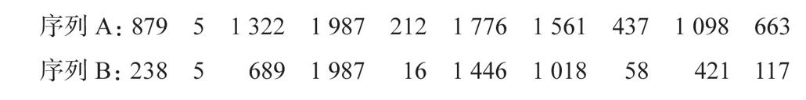

我们比较两个阿拉伯数字大小的速度不仅与它们的间距有关，同时也与它们的大小有关。判断9大于8比判断2大于1需要更长的时间。在距离相等的情况下，大数字会比小数字更难进行大小比较。这种数字变大引起的反应速度变慢再次让我们联想到婴儿与其他动物的知觉能力，它们同样会受到数字间距和大小的影响。这个惊人的相似性证实：在使用阿拉伯数字之类的符号时，我们的大脑所读取的数量内部表征与其他动物和婴儿的表征非常相似。
事实上，正像其他动物那样，决定人类区分两个数字容易程度的参数并不是两个数之间的绝对距离，而是相对于它们自身大小的距离。从主观上来看，8和9之间的距离与1和2之间的距离并不相同。我们衡量数字的“心理尺”的刻度并不是均匀的，而是倾向于将较大的数字压缩至一个较小的空间。我们的大脑表征数字的方式更像对数尺度：1和2、2和4以及4和8之间是等距的。因此，计算的准确性和速度都不可避免地随数值的增大而下降。
大量实证研究的结果非常集中地支持了大数字在心理上以压缩的形式进行表征的假说15。有些实验完全基于内省：主观估计4和6哪个更接近5？16尽管问题看起来有些词不达意，但大多数人都认为，在数字间距相同的情况下，大一点的6看起来与5差异更小。其他实验则采用了更微妙、更间接的方法，例如：让我们假设你是个随机数产生器，你必须在1到50之间随机选择数字。当参与这项实验的被试足够多的时候，就能产生一个系统偏差：不同于完全随机，比起大数字来，我们更倾向于经常性地产出小数字，就好像小数字在我们抽取数字的“内部容器”中占更大的比重17。这意味着，在没有“客观”的随机性来源（比如骰子或者一个真实的随机数产生器）的情况下，我们无法实现随机选择。
据我推测，这种对小数字的偏向可能对我们利用直觉来完成和解释统计分析有着深远的甚至是毁灭性的影响。思考一下下面这个问题18。计算机随机生成两组数字，你的任务是在不进行计算的情况下估计这两组自1到2 000之间的数字的随机性和均匀性：

多数人会觉得序列B中的数字看起来分布更均匀，因而比序列A组的数字“更随机”。在序列A中，大数字似乎出现得太频繁了。然而从数学的角度看来，A组比B组更能代表从1到2 000的数字连续体。序列A中的数字以略大于200为间隔单位规则地分布，而序列B中的数字则呈指数型分布。我们选择序列B的原因在于，它更符合我们对数轴的心理表征，即大数字不如小数字醒目的压缩序列。
我们在选择度量单位时，同样能够表现出这种压缩效应。1795年4月17日，公制开始在巴黎实行。为使其具有普遍性，其单位涵盖了从纳米到千米范围内所有10的幂，甚至每个幂都对应一个专门的名字：毫米、厘米、分米、米等。然而这些单位仍然因为间距太大而不适合日常使用。于是法国的立法者规定“每个十进位单位必须有它的双倍数和半数”。根据这项规定产生了规则序列1、2、5、10、20、50、100……今天的硬币和纸币系统仍在使用这个序列。这一序列符合人类的数感，因为它类似于指数序列，并且由较小的约整数(8)构成。1877年，出于类似的理由，查理·雷纳（Charles Renard）上校实施了一种基于准对数序列（100、125、160、200、250、315、400、500、630、800、1 000）的工业产品（如螺钉直径和轮子尺寸）标准化方法。当一个连续量需要被分割成一些离散的类别时，直觉就会指引我们选择一个与我们的内部数字表征相吻合的压缩序列，它通常是对数的形式。